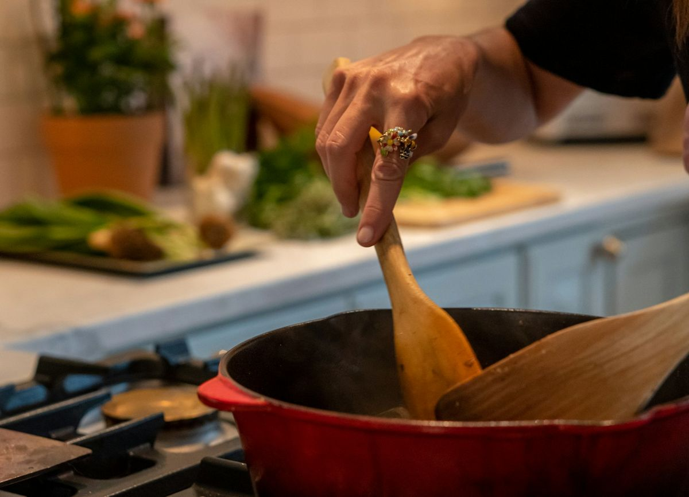

About Victory
Good food, prepared where home is
A professional culinary company built around households and everyday life.
Who we are
Victory Culinary Services Inc. is a professional culinary and in-home food services company based in Winnipeg, Manitoba.
We are not a restaurant, a food truck or a conventional caterer. We start with meal preparation for households and plan to grow into meal planning, cooking instruction, events and culinary content.
Corporation No. 1838457-6. Registered office: 117-66 Morrow Avenue, Winnipeg, Manitoba, Canada.

What guides us
Our approach
1
Care
Food prepared with attention, because the details matter.
2
Fit
Planned around your household, not the other way round.
3
Welcome
Food from many traditions, for many tables.
Let us cook with you in mind.
Tell us about your household and what you need. We will come back to you.